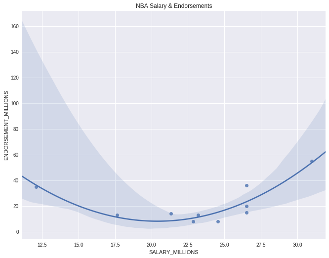

Lesson 7: Case Studies
Watch Lesson 7: Case Studies Video
Pragmatic AI Labs

This notebook was produced by Pragmatic AI Labs. You can continue learning about these topics by:
- Buying a copy of Pragmatic AI: An Introduction to Cloud-Based Machine Learning from Informit.
- Buying a copy of Pragmatic AI: An Introduction to Cloud-Based Machine Learning from Amazon
- Reading an online copy of Pragmatic AI:Pragmatic AI: An Introduction to Cloud-Based Machine Learning
- Watching video Essential Machine Learning and AI with Python and Jupyter Notebook-Video-SafariOnline on Safari Books Online.
- Watching video AWS Certified Machine Learning-Speciality
- Purchasing video Essential Machine Learning and AI with Python and Jupyter Notebook- Purchase Video
- Viewing more content at noahgift.com
Load AWS API Keys
Put keys in local or remote GDrive:
cp ~/.aws/credentials /Users/myname/Google\ Drive/awsml/
Mount GDrive
from google.colab import drive
drive.mount('/content/gdrive', force_remount=True)
Mounted at /content/gdrive
import os;os.listdir("/content/gdrive/My Drive/awsml")
['kaggle.json', 'credentials', 'config']
Install Boto
!pip -q install boto3
Create API Config
!mkdir -p ~/.aws &&\
cp /content/gdrive/My\ Drive/awsml/credentials ~/.aws/credentials
Test Comprehend API Call
import boto3
comprehend = boto3.client(service_name='comprehend', region_name="us-east-1")
text = "There is smoke in San Francisco"
comprehend.detect_sentiment(Text=text, LanguageCode='en')
{'ResponseMetadata': {'HTTPHeaders': {'connection': 'keep-alive',
'content-length': '160',
'content-type': 'application/x-amz-json-1.1',
'date': 'Fri, 14 Dec 2018 16:11:55 GMT',
'x-amzn-requestid': 'fa00db36-ffba-11e8-882b-8bc33ca9084d'},
'HTTPStatusCode': 200,
'RequestId': 'fa00db36-ffba-11e8-882b-8bc33ca9084d',
'RetryAttempts': 0},
'Sentiment': 'NEUTRAL',
'SentimentScore': {'Mixed': 0.008628507144749165,
'Negative': 0.1037612184882164,
'Neutral': 0.8582549691200256,
'Positive': 0.0293553676456213}}
7.1 Sagemaker Features
Search
[Demo] Search
Manage Machine Learning Experiments with Search
- Finding training jobs
- Rank training jobs
- Tracing lineage of a model
Ground Truth

- Setup and Manage labeling jobs
- Uses active learning and human labeling
- First 500 objects labeled per month are free
[Demo] Labeling Job
Notebook

[Demo] Sagemaker Notebooks
- Create and run Jupyter Notebooks
- Using Jupyter
- Using JupyterLab
-
Using the terminal
-
Lifecycle configurations
- Git Repositories
- public repositories can be cloned on Notebook launch
Training

[Demo] Sagemaker Training
- Algorithms
- Create algorithm
-
Subscribe AWS Marketplace
-
Training Jobs
- HyperParameter Tuning Jobs
Inference

[Demo] Sagemaker Inference
-
Compilation jobs
-
Model packages
-
Models
-
Endpoint configurations
-
Endpoints
-
Batch transform jobs
Built in Sagemaker Algorithms
Table of algorithms provided by Amazon Sagemaker

7.2 DeepLense Features


[Demo] DeepLense
7.3 Kinesis Features
- Processes Data in Real-Time
- Can process hundreds of TBs an hour
- Example inputs are:
- logs
- financial transactions
- Streaming Data
!pip install -q sensible
import boto3
import asyncio
import time
import datetime
import uuid
import boto3
import json
from sensible.loginit import logger
LOG = logger(__name__)
def firehose_client(region_name="us-east-1"):
"""Kinesis Firehose client"""
firehose_conn = boto3.client("firehose", region_name=region_name)
extra_msg = {"region_name": region_name, "aws_service": "firehose"}
LOG.info("firehose connection initiated", extra=extra_msg)
return firehose_conn
async def put_record(data,
client,
delivery_stream_name="aws-ml-cert"):
"""
See this:
http://boto3.readthedocs.io/en/latest/reference/services/
firehose.html#Firehose.Client.put_record
"""
extra_msg = {"aws_service": "firehose"}
LOG.info(f"Pushing record to firehose: {data}", extra=extra_msg)
response = client.put_record(
DeliveryStreamName=delivery_stream_name,
Record={
'Data': data
}
)
return response
def gen_uuid_events():
"""Creates a time stamped UUID based event"""
current_time = 'test-{date:%Y-%m-%d %H:%M:%S}'.format(date=datetime.datetime.now())
event_id = str(uuid.uuid4())
event = {event_id:current_time}
return json.dumps(event)
def send_async_firehose_events(count=100):
"""Async sends events to firehose"""
start = time.time()
client = firehose_client()
extra_msg = {"aws_service": "firehose"}
loop = asyncio.get_event_loop()
tasks = []
LOG.info(f"sending aysnc events TOTAL {count}",extra=extra_msg)
num = 0
for _ in range(count):
tasks.append(asyncio.ensure_future(put_record(gen_uuid_events(), client)))
LOG.info(f"sending aysnc events: COUNT {num}/{count}")
num +=1
loop.run_until_complete(asyncio.wait(tasks))
loop.close()
end = time.time()
LOG.info("Total time: {}".format(end - start))
send_async_firehose_events(10)
7.4 AWS Flavored Python
Boto3
-
Main Interface for working with AWS
- Any Service in AWS can be communicated with Boto
- If Amazon is a country this is the language
Communicate with S3
import boto3
resource = boto3.resource("s3")
resource.meta.client.download_file('testntest', 'nba_2017_endorsement_full_stats.csv',
'/tmp/nba_2017_endorsement_full_stats.csv')
!ls -l /tmp
total 4
srw------- 1 root root 0 Dec 14 16:11 drivefs_ipc.0
srw------- 1 root root 0 Dec 14 16:11 drivefs_ipc.0_shell
-rw-r--r-- 1 root root 1447 Dec 14 19:06 nba_2017_endorsement_full_stats.csv
Pandas
Main Datascience library for AWS and Python
- It is assumed you know about it
- Many study videos will show examples using it
import pandas as pd
df = pd.read_csv("/tmp/nba_2017_endorsement_full_stats.csv")
df.head(2)
| PLAYER | TEAM | SALARY_MILLIONS | ENDORSEMENT_MILLIONS | PCT_ATTENDANCE_STADIUM | ATTENDANCE_TOTAL_BY_10K | FRANCHISE_VALUE_100_MILLION | ELO_100X | CONF | POSITION | AGE | MP | GP | MPG | WINS_RPM | PLAYER_TEAM_WINS | WIKIPEDIA_PAGEVIEWS_10K | TWITTER_FAVORITE_COUNT_1K | |
|---|---|---|---|---|---|---|---|---|---|---|---|---|---|---|---|---|---|---|
| 0 | LeBron James | Cleveland Cavaliers | 30.96 | 55.0 | 100.0 | 84.0 | 12.0 | 15.45 | East | SF | 32 | 37.8 | 74.0 | 37.8 | 20.43 | 51.0 | 14.70 | 5.53 |
| 1 | Kevin Durant | Golden State Warriors | 26.50 | 36.0 | 100.0 | 80.0 | 26.0 | 17.70 | West | SF | 28 | 33.4 | 62.0 | 33.4 | 12.24 | 51.0 | 6.29 | 1.43 |
Descriptive Statistics with Pandas
df.describe()
| SALARY_MILLIONS | ENDORSEMENT_MILLIONS | PCT_ATTENDANCE_STADIUM | ATTENDANCE_TOTAL_BY_10K | FRANCHISE_VALUE_100_MILLION | ELO_100X | AGE | MP | GP | MPG | WINS_RPM | PLAYER_TEAM_WINS | WIKIPEDIA_PAGEVIEWS_10K | TWITTER_FAVORITE_COUNT_1K | |
|---|---|---|---|---|---|---|---|---|---|---|---|---|---|---|
| count | 10.000000 | 10.000000 | 10.000000 | 10.000000 | 10.000000 | 10.000000 | 10.000000 | 10.000000 | 10.000000 | 10.000000 | 10.000000 | 10.000000 | 10.000000 | 10.000000 |
| mean | 23.216000 | 21.700000 | 99.800000 | 80.200000 | 21.375000 | 15.678000 | 29.300000 | 33.890000 | 70.800000 | 33.890000 | 11.506000 | 44.100000 | 6.532000 | 2.764000 |
| std | 5.294438 | 15.362653 | 2.394438 | 5.202563 | 8.507554 | 1.361142 | 3.164034 | 2.303837 | 8.390471 | 2.303837 | 6.868487 | 12.591443 | 5.204233 | 3.646399 |
| min | 12.110000 | 8.000000 | 94.000000 | 70.000000 | 10.250000 | 13.740000 | 24.000000 | 29.900000 | 60.000000 | 29.900000 | 1.170000 | 26.000000 | 2.690000 | 0.350000 |
| 25% | 21.707500 | 13.000000 | 100.000000 | 78.500000 | 13.125000 | 15.250000 | 28.000000 | 32.725000 | 62.500000 | 32.725000 | 6.015000 | 32.500000 | 3.402500 | 0.865000 |
| 50% | 23.880000 | 14.500000 | 100.000000 | 80.500000 | 22.500000 | 15.450000 | 28.000000 | 33.850000 | 73.000000 | 33.850000 | 12.860000 | 46.500000 | 4.475000 | 1.485000 |
| 75% | 26.500000 | 31.250000 | 100.000000 | 83.250000 | 26.000000 | 16.275000 | 31.750000 | 34.975000 | 77.750000 | 34.975000 | 16.890000 | 51.000000 | 5.917500 | 2.062500 |
| max | 30.960000 | 55.000000 | 104.000000 | 89.000000 | 33.000000 | 17.700000 | 35.000000 | 37.800000 | 81.000000 | 37.800000 | 20.430000 | 65.000000 | 17.570000 | 12.280000 |
Plotting with Python
import warnings
import numpy as np
warnings.simplefilter('ignore', np.RankWarning)
import seaborn as sns
import matplotlib.pyplot as plt
fig, ax = plt.subplots()
fig.set_size_inches(11, 8.5)
sns.regplot(data=df,
x="SALARY_MILLIONS", y="ENDORSEMENT_MILLIONS",
order=2).set_title("NBA Salary & Endorsements")
Text(0.5,1,'NBA Salary & Endorsements')

Putting it all together (Production Style)
!pip -q install python-json-logger
import logging
from pythonjsonlogger import jsonlogger
LOG = logging.getLogger()
LOG.setLevel(logging.DEBUG)
logHandler = logging.StreamHandler()
formatter = jsonlogger.JsonFormatter()
logHandler.setFormatter(formatter)
LOG.addHandler(logHandler)
import click
import boto3
import pandas as pd
TEST_DF = pd.DataFrame(
{"SentimentRaw": ["I am very Angry",
"We are very Happy",
"It is raining in Seattle"]}
)
def create_sentiment(row):
"""Uses AWS Comprehend to Create Sentiments on a DataFrame"""
LOG.info(f"Processing {row}")
comprehend = boto3.client(service_name='comprehend', region_name="us-east-1")
payload = comprehend.detect_sentiment(Text=row, LanguageCode='en')
LOG.debug(f"Found Sentiment: {payload}")
sentiment = payload['Sentiment']
return sentiment
def apply_sentiment(df, column="SentimentRaw"):
"""Uses Pandas Apply to Create Sentiment Analysis"""
df['Sentiment'] = df[column].apply(create_sentiment)
return df
df = apply_sentiment(TEST_DF)
df.head()
| SentimentRaw | Sentiment | |
|---|---|---|
| 0 | I am very Angry | NEGATIVE |
| 1 | We are very Happy | POSITIVE |
| 2 | It is raining in Seattle | NEUTRAL |
7.5 Cloud9
- Web based development environment

[Demo]Cloud9
- Create a cloud9 environment
- Install Python 3.6
sudo yum -y update
sudo yum -y install python36
Python Lambda Function
import json
import decimal
def lambda_handler(event, context):
print(event)
if 'body' in event:
event = json.loads(event["body"])
amount = float(event["amount"])
res = []
coins = [1,5,10,25]
coin_lookup = {25: "quarters", 10: "dimes", 5: "nickels", 1: "pennies"}
coin = coins.pop()
num, rem = divmod(int(amount*100), coin)
res.append({num:coin_lookup[coin]})
while rem > 0:
coin = coins.pop()
num, rem = divmod(rem, coin)
if num:
if coin in coin_lookup:
res.append({num:coin_lookup[coin]})
response = {
"statusCode": "200",
"headers": { "Content-type": "application/json" },
"body": json.dumps({"res": res})
}
return response
payload
{"amount": ".71"}
response
Response
{
"statusCode": "200",
"headers": {
"Content-type": "application/json"
},
"body": "{\"res\": [{\"2\": \"quarters\"}, {\"2\": \"dimes\"}, {\"1\": \"pennies\"}]}"
}
Function Logs
{'amount': '.71'}
Request ID
d7ec2cad-8da0-4394-957e-41f07bad23ae
7.6 Key Terminology
Sagemaker Built-in Algorithms
BlazingText
- unsupervised learning algorithm for generating Word2Vec embeddings.
- aws blog post BlazingText

DeepAR Forecasting
- supervised learning algorithm for forecasting scalar (that is, one-dimensional) time series using recurrent neural networks (RNN)
- DeepAR Documentation